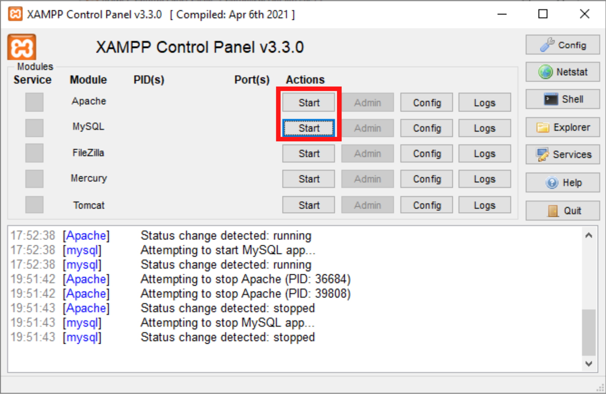
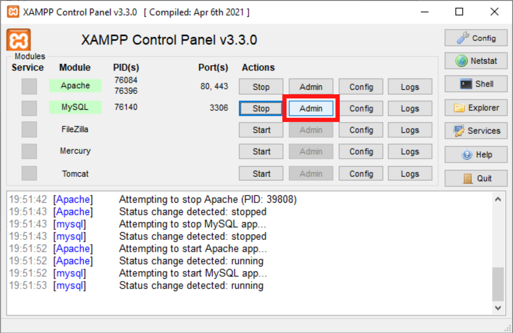
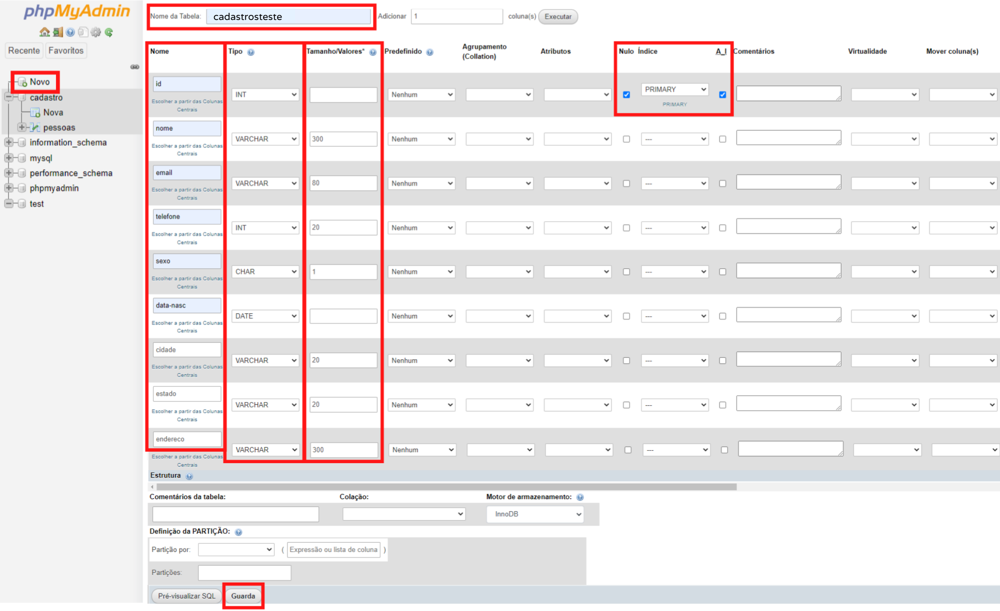
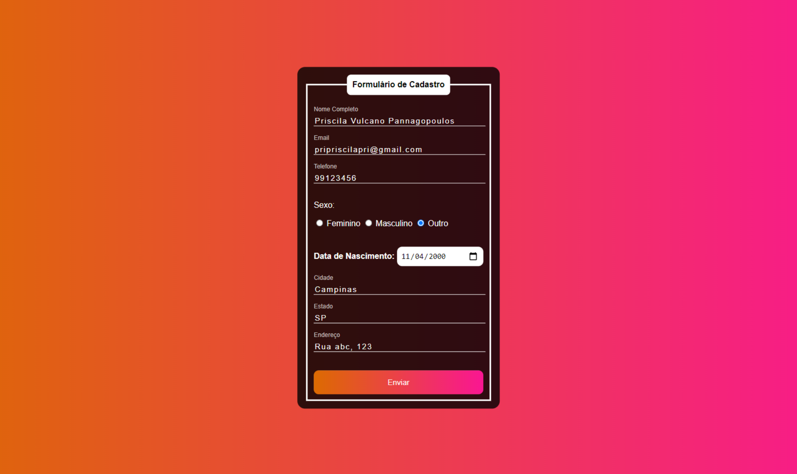

Linguagem, banco de dados e páginas dinâmicas
Existem diversas linguagens para trabalhar com o back end, mas, aqui, veremos um pouco do PHP. Essa sigla, hoje, significa PHP Hypertext Preprocessor (isso mesmo, o P é de PHP), mas originalmente significava Personal Home Page.
Essa linguagem roda no server-side, lembra? Seu navegador não a interpreta, mas uma página HTML personalizada é criada a partir dela (e essa, sim, o browser compila em formato visual).
Então, para aprendermos um pouco sobre, transformaremos nosso computador em "metade cliente e metade servidor". Para isso baixaremos o pacote XAMPP (ele vem com algumas funcionalidades que precisaremos, como o Apache (que é um servidor), o banco de dados MySQL e um interpretador PHP).
Após instalado o pacote, temos que abri-lo, ativar as funções Apache e MySQL (clicando em Start) e aguardar até ficar verde. Esse processo precisa ser feito sempre que quisermos abrir um documento que está salvo para rodar com o XAMPP.
Salvaremos as pastas e arquivos que criarmos para trabalhar com o PHP em Disco Local (C:) > xampp > htdocs. Abriremos eles no browser, mas pesquisando por: localhost://nome-da-pasta-ou-arquivo-nao-esqueca-da-extensao. Esse localhost se refere ao seu próprio computador, onde os arquivos estão salvos; funciona como um "servidor offline" para o qual você vai solicitar a página ou pasta (ele serve especialmente para testes de desenvolvedores).
Como já sabemos, o PHP conecta uma página HTML a um banco de dados; assim, informações do front end podem ser salvas no data base e a página pode ser dinamicamente atualizada quando o data base também for.
No mundo físico existem armários que guardam pastas que guardam fichas. Em programação, os armários são bancos de dados, as pastas são tabelas e as fichas são registros (compostos por campos), e tudo é digital.
Aqui, usaremos o banco de dados MySQL — SQL significa Structured Query Language ou Linguagem de Consulta Estruturada.
Faremos um formulário de cadastro. Primeiro o HTML 👇
<!DOCTYPE html>
<html>
<head>
<meta charset="UTF-8">
<meta http-equiv="X-UA-Compatible" content="IE=edge">
<meta name="viewport" content="width=device-width, initial-scale=1.0">
<title>Formulário e banco de dados</title>
<link href="form-style.css" rel="stylesheet">
</head>
<body>
<div class="box">
<form action="enviar.php" method="POST"> <!-- quando o formulário for enviado a ação das informações irem para "enviar.php" e o que mais tiver nesse arquivo serão executados -->
<fieldset> <!-- agrupa elementos dentro de um formulário -->
<legend><b>Formulário de Cadastro</b></legend> <!-- é uma legenda usada junto com a tag <fieldset>; tag <b> = bold ou negrito -->
<br><br>
<div class="inputBox">
<input type="text" name="nome" id="nome" class="inputUser" required> <!-- <input> proporciona interatividade ao formulário, pois permite que o usuário o complete com suas informações -->
<label for="nome" class="label-input">Nome Completo</label> <!-- <label> = etiqueta ou rótulo do input -->
</div>
<br><br>
<div class="inputBox">
<input type="text" name="email" id="email" class="inputUser" required> <!-- required = requerido ou obrigatório para o usuário preencher -->
<label for="email" class="label-input">Email</label>
</div>
<br><br>
<div class="inputBox">
<input type="number" name="telefone" id="telefone" class="inputUser" required>
<label for="telefone" class="label-input">Telefone</label>
</div>
<br>
<p>Sexo:</p>
<input type="radio" name="sexo" id="feminino" value="F" required> <!-- <input type="radio"> é aquele que temos que preencher clicando em apenas uma das opções; todos os botões radio que têm o mesmo name indicam que são opções sobre a mesma coisa, então, só uma delas pode ser escolhida -->
<label for="sexo">Feminino</label>
<input type="radio" name="sexo" id="masculino" value="M" required> <!-- value = valor daquele input radio, é como a sua escolha ficará salva se você escolher aquela opção -->
<label for="sexo">Masculino</label>
<input type="radio" name="sexo" id=outro" value="O" required>
<label for="sexo">Outro</label>
<br><br><br>
<label for="data_nascimento"><b>Data de Nascimento:</b></label>
<input type="date" name="data_nascimento" id="data_nascimento" required>
<br><br><br>
<div class="inputBox">
<input type="text" name="cidade" id="cidade" class="inputUser" required>
<label for="cidade" class="label-input">Cidade</label>
</div>
<br><br>
<div class="inputBox">
<input type="text" name="estado" id="estado" class="inputUser" required>
<label for="estado" class="label-input">Estado</label>
</div>
<br><br>
<div class="inputBox">
<input type="text" name="endereco" id="endereco" class="inputUser" required>
<label for="endereco" class="label-input">Endereço</label>
</div>
<br><br>
<input type="submit" name="submit" id="submit"> <!-- <input type="submit"> = botão enviar -->
</fieldset>
</form>
</div>
</body>
</html>Adicionaremos o CSS em um outro arquivo 👇
body {
font-family: Arial, Helvetica, sans-serif;
background-image: linear-gradient(to right, #dd6b01, #fa1693);
}
.box {
color: white;
position: absolute;
top: 50%;
left: 50%;
transform: translate(-50%,-50%);
background-color: rgba(0, 0, 0, 0.8);
padding: 15px;
border-radius: 15px;
}
fieldset {
border: 3px solid white;
}
legend {
border: 1px solid white;
padding: 10px;
text-align: center;
background-color: white;
border-radius: 8px;
color: black;
}
.inputBox {
position: relative;
}
.inputUser {
background: none;
border: none;
border-bottom: 1px solid white;
outline: none; /* significa contorno; adiciona mais uma borda ao elemento quando ele está selecionado */
color: white;
font-size: 15px;
width: 100%;
letter-spacing: 2px;
}
.label-input {
position: absolute;
top: 0px;
left: 0px;
pointer-events: none; /* controla como aquele elemento responderá aos eventos do mouse do usuário */
transition: .5s; /* define a duração da transição entre dois estados de um elemento; é um poderoso recurso para a criação de efeitos de animação */
}
.inputUser:focus ~ .label-input,
.inputUser:valid ~ .label-input {
top: -20px;
font-size: 12px;
color: rgb(194, 190, 190);
}
#data_nascimento {
border: none;
padding: 8px;
border-radius: 10px;
outline: none;
font-size: 15px;
}
#submit {
background-image: linear-gradient(to right, #dd6b01, #fa1693);
width: 100%;
border: none;
padding: 15px;
color: white;
font-size: 15px;
cursor: pointer;
border-radius: 10px;
}
#submit:hover {
background-image:linear-gradient(to right, #c46002, #c71978);
color: rgb(204, 204, 204);
}O resultado será esse:
Então, criaremos um banco de dados e uma tabela. Vamos ao XAMPP > MySQL > Admin.
É só criar um novo banco, uma nova tabela e configurar os campos de acordo com o que há para ser preenchido no formulário. Depois, ambos (banco e tabela) serão exibidos na barra lateral.
Numéricos
• SMALLINT — número inteiro pequeno;
• MEDIUMINT — número inteiro de tamanho médio;
• INT — número inteiro de tamanho comum;
• BIGINT — número inteiro de tamanho grande;
• DECIMAL — número decimal.
Data/Tempo
• DATE — data no formato 'CCYY-MM-DD'. Por exemplo 1985-11-25 (ano-mês-dia). O 'CC' se refere aos dois dígitos do século (century, em inglês);
• TIME — horário;
• YEAR — ano.
Strings (cadeias de caracteres)
• CHAR — string de tamanho fixo. Por exemplo, se o tamanho é 30, mas a palavra preenchida no formulário tem menos letras, ele vai completar com espaços até dar 30;
• VARCHAR — uma string de tamanho variável. Aqui, 30 letras significa até 30;
• TEXT — string pequena;
• MEDIUMTEXT — string de tamanho comum;
• LONGTEXT — string de tamanho grande.
Agora, precisamos conectar o front com o banco de dados; então vamos criar o caminho usando PHP — para isso crie um arquivo separado com a extensão .php — 👇
// o comentário em PHP é igual em JS
<?php // é assim que se abre o PHP
// $ = variável em PHP
$hostname = "localhost"; // nesta variável estamos guardando o nome do nosso servidor offline, o localhost
$usuario = "root"; // por padrão, nosso nome de usuário é root
$senha = ""; // não temos senha no MySQL
$bd = "cadastro";
$conexao = new mysqli($hostname, $usuario, $senha, $bd);
?> // é assim que se fecha o PHPNo nosso código HTML, você pode ver que o formulário tem a ação de levar o usuário à página "enviar.php" após o botão enviar ser pressionado. Então, vamos criar esta página e aplicar a conexão que acabamos de criar 👇
<?php
if (isset($_POST["submit"])) {
/* if = se
isset verifica se uma variável existe e seu valor não é igual a null (nulo).
No caso, isset vai verificar se as informações foram enviadas através do método post, quando clicaram no submit
Se isso for verdade, as linhas de código a seguir serão executadas
*/
include_once("conexão.php");
/* aqui estamos incluindo a conexão que criamos no outro arquivo
para jogar as informações no banco de dados:
*/
$nome = $_POST["nome"]; // cada variável está recebendo, pelo método post, as informações que foram inseridas nos inputs que têm aqueles nomes (que estão entre aspas (""))
$email = $_POST["email"];
$telefone = $_POST["telefone"];
$sexo = $_POST["sexo"];
$dataNasc = $_POST["data_nascimento"];
$cidade = $_POST["cidade"];
$estado = $_POST["estado"];
$endereco = $_POST["endereco"];
$result = mysqli_query($conexao, "INSERT INTO cadastrosteste (nome, email, telefone, sexo, data_nasc, cidade, estado, endereco) VALUES ('$nome' '$email',
'$telefone', '$sexo', '$dataNasc', '$cidade', '$estado', '$endereco')");
// aqui estamos inserindo em cada campo da tabela cadastrosteste seus respectivos valores, que estão guardados nas variáveis que acabamos de criar
}
?>Você também pode fazer um HTML dentro deste PHP (abrindo todas as tags normalmente) com uma mensagem do tipo: "Cadastrado(a) com sucesso!" para o usuário; e também pode fazer um CSS interno para esse HTML.
Atenção: você pode escrever HTML e CSS dentro de arquivos .php, mas não o contrário!
Pra finalizar, vamos criar uma página que faz outro caminho: puxa as informações que já tem no banco de dados até o front end. Será uma página de listagem 👇
<?php
include("conexão.php");
$consulta = "SELECT * FROM cadastrosteste";
$result = $conexao -> query($consulta);
?>
<!DOCTYPE html>
<html>
<html lang="pt-br">
<head>
<meta charset="UTF-8">
<meta http-equiv="X-UA-Compatible" content="IE=edge">
<meta name="viewport" content="width=device-width, initial-scale=1.0">
<title>Listagem do Banco da Dados</title>
<style>
body {
background: linear-gradient(to right, #dd6b01, #fa1693);
}
#título {
text-align: center;
}
#tabela {
text-align: center;
font-family: Arial, Helvetica, sans-serif;
}
table, th, td {
border: 1px solid black;
border-collapse: collapse; /* collapse tira uma das bordas que teria na tabela por padrão, deixando todas as células compartilhando uma borda única */
}
th, td {
padding: 10px;
}
th {
background: rgb(228, 227, 227);
color: black;
}
tr {
background-color: rgba(0, 0, 0, 0.7);
color: white;
}
</style>
</head>
<body>
<h1 id="título">Listagem do Data Base cadastro - Tabela cadastrosteste</h1>
<br>
<table id="tabela" align="center">
<thead> <!-- table head ou cabeçalho da tabela -->
<tr>
<th>#</th> <!-- <th> = table header ou célula de cabeçalho; é a mesma coisa que a tag <td>, mas deixa o texto em negrito -->
<th>Nome</th>
<th>Email</th>
<th>Telefone</th>
<th>Sexo</th>
<th>Data de Nascimento</th>
<th>Cidade</th>
<th>Estado</th>
<th>Endereço</th>
</tr>
</thead>
<tbody> <!-- table body ou corpo da tabela -->
<tr>
<?php
while ($user_data = $result -> fetch_array( )) {
/* while = enquanto
esse comando vai buscar (fetch) os arrays (um tipo de dado) da variável $result (que faz o link com uma tabela específica no banco de dados)
A variável $user_data é o que usaremos em vez de escrever a função toda de novo, de novo e de novo...
*/
?>
<tr>
<td><?php echo $user_data ["id"]; ?></td>
<td><?php echo $user_data ["nome"]; ?></td>
<td><?php echo $user_data ["email"]; ?></td>
<td><?php echo $user_data ["telefone"]; ?></td>
<td><?php echo $user_data ["sexo"]; ?></td>
<td><?php echo date("d/m/Y", strtotime ($user_data ["data_nasc"])); ?></td>
<!-- aqui, antes de chamarmos o array específico pra data, arrumamos a forma como ela vai aparecer (day/month/Year) porque lá na tabela do bd está no formato americano -->
<td><?php echo $user_data ["cidade"]; ?></td>
<td><?php echo $user_data ["estado"]; ?></td>
<td><?php echo $user_data ["endereco"]; ?></td>
</tr>
<?php
}
?>
</tbody>
</table>
</body>
</html>E vamos testar o funcionamento preenchendo o formulário e atualizando a página de listagem para ver as informações lá:
